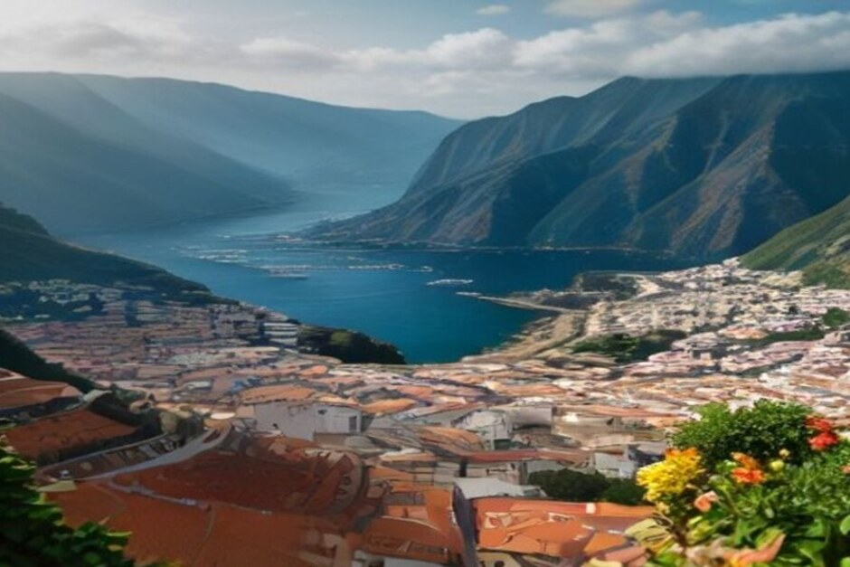

La moitié de ce qui se vend comme « souvenir de Madère » sur l'artère touristique de Funchal est en réalité importée du Portugal continental ou de plus loin encore. Voici les dix authentiques — cultivés, tressés, distillés ou brodés sur l'île — classés selon la facilité à les rapporter chez soi, avec l'adresse où trouver la vraie version plutôt que la copie.
1. Le vin de Madère — la bouteille qui vaut le poids supplémentaire dans la valise
Le vin de Madère est le souvenir le plus étroitement lié à l'île : un vin muté volontairement chauffé pendant son vieillissement — un procédé appelé estufagem, ou la méthode plus lente du canteiro — ce qui explique aussi pourquoi c'est l'un des seuls vins au monde à se conserver plusieurs semaines après ouverture sans s'abîmer. Achetez-le directement dans le chai d'un producteur, dans la vieille ville de Funchal — Blandy's, Barbeito et Henriques & Henriques y proposent tous des dégustations — plutôt qu'à l'aéroport, où le choix est restreint et les prix ne sont pas meilleurs.

2. Bordado Madeira — la broderie main avec la preuve de son authenticité
Le Bordado Madeira, la broderie blanche traditionnelle de l'île, est entièrement cousu à la main sur lin, organdi ou coton, et les pièces authentiques portent un petit sceau de plomb de l'IBTAM, l'institut officiel qui certifie où et comment chaque pièce a été fabriquée. Nappes, mouchoirs et robes de baptême vendus sans ce sceau sur les étals en plein air sont presque toujours des imports fabriqués à la machine — mieux vaut acheter dans une maison de broderie spécialisée du centre de Funchal.
3. Vime — l'osier tressé à Camacha
La majorité de l'osier vendu à Madère, des paniers aux fauteuils complets, est encore tressée à Camacha, un village de montagne au-dessus de Funchal qui a bâti son économie autour du travail de l'osier depuis le XIXe siècle, et qui fabrique aussi les luges en bois et en osier utilisées sur la piste de toboggan de Monte. L'atelier d'osier du village propose le choix le plus frais et expédie les pièces volumineuses si un fauteuil ne tient pas dans votre bagage cabine.
4. Un kit de poncha — aguardente de cana, miel et le pilão en bois
Une bouteille d'aguardente de cana, l'eau-de-vie brute de canne à sucre de Madère, accompagnée de miel, de citron et du pilão en bois qui sert à les piler ensemble, est le moyen le plus simple de recréer la poncha, la boisson emblématique de l'île, une fois rentré chez soi. Câmara de Lobos, où la boisson serait traditionnellement née, vend encore ces ingrédients réunis dans de petites tascas près du port.
5. Bolo de mel — un gâteau conçu pour survivre au voyage
Le bolo de mel, le gâteau épicé et dense de Madère, lié avec de la mélasse de canne plutôt qu'avec du vrai miel, était traditionnellement cuit pour se conserver des mois sans réfrigération, ce qui en fait l'un des rares produits locaux à vraiment survivre à un long vol retour. Il se vend entier ou en portions individuelles emballées au Mercado dos Lavradores et dans la plupart des boulangeries de Funchal.
6. Mel-de-cana — le « miel » qui est en réalité du sirop de canne
Le mel-de-cana est le sirop de canne à sucre épais et sombre qui donne à la poncha et au bolo de mel leur nom et leur douceur, bien qu'il ne contienne pas la moindre trace de vrai miel d'abeille. Il se vend en bouteille dans la plupart des épiceries et marchés de Funchal, se conserve indéfiniment, et constitue une alternative plus légère et moins chère qu'une bouteille entière d'eau-de-vie pour qui manque de poids dans ses bagages.
7. Les liqueurs de fruits — maracujá, anona et banane
Les terrasses chaudes de la côte sud de Madère cultivent le fruit de la passion (maracujá), la pomme-cannelle (anona) et la petite banane douce propre à l'île, et les trois se retrouvent en liqueurs sur les mêmes étagères que celles des chais à vin. Moins fortes et moins chères qu'une bouteille de vin de Madère, elles font un complément facile plutôt qu'un cadeau principal.
8. Le strelitzia — la fleur conditionnée pour le vol retour
Madère se surnomme elle-même l'île aux Fleurs, et le strelitzia, ou oiseau de paradis, en est la fleur emblématique — vendu sur les étals de fleuristes près du Mercado dos Lavradores dans des boîtes prêtes à voyager, conçues pour survivre au trajet et durer des semaines une fois mis en pot. C'est l'un des rares souvenirs vivants que les compagnies aériennes ont l'habitude de voir enregistrés en soute.
9. Plaques de maison et carreaux d'azulejo peints à la main
Ces petits carreaux de céramique peints à la main, souvent réalisés sur commande avec un nom de rue, un numéro de maison ou une scène des toits de Funchal, sont vendus par une poignée d'ateliers de la vieille ville et demandent quelques jours de cuisson et de finition. Plus lourds qu'une broderie ou une bouteille de liqueur, ils se rangent à plat, ce qui les rend plus faciles à transporter qu'il n'y paraît.
10. Une luge en osier miniature — souvenir de la balade la plus célèbre de Monte
Ces petites répliques en osier et en bois des carros de cesto, les luges-paniers que les carreiros pilotent encore de Monte jusqu'à Funchal, sont fabriquées par les mêmes ateliers de Camacha qui construisent les modèles grandeur nature. C'est une façon compacte et immanquablement madérienne de rapporter chez soi une balade que la plupart des visiteurs ne vivent qu'une seule fois.
Si ce n'est ni cousu, ni tressé, ni distillé, ni cultivé sur l'île, ce n'est pas vraiment un souvenir de Madère — c'est simplement un objet qui se trouvait être en vente là-bas.
Mettez le vin et les liqueurs en soute, gardez la broderie et les carreaux en bagage cabine à l'abri de l'écrasement, et laissez de la place — la plupart de ces souvenirs se trouvent plus facilement dans le centre de Funchal qu'à l'aéroport au moment du départ.
Questions fréquentes
Quel est le souvenir le plus authentique à acheter à Madère ?
Une bouteille de vin de Madère, puisque ce style de vin muté et vieilli à la chaleur est unique à l'île ; la broderie certifiée Bordado Madeira arrive juste après en distinction.
Comment savoir si une broderie de Madère est authentique ?
Cherchez le petit sceau de plomb de l'IBTAM — les pièces qui en sont dépourvues sur les étals touristiques sont presque toujours des imports fabriqués à la machine.
Peut-on rapporter du vin de Madère dans ses bagages ?
Oui, en bagage en soute, sans restriction particulière. En bagage cabine, les limites internationales habituelles sur les liquides de plus de 100 ml s'appliquent toujours.
Vaut-il mieux acheter ses souvenirs à Funchal ou à l'aéroport ?
Funchal — les boutiques spécialisées et les chais à vin proposent un choix bien plus large que la poignée de comptoirs hors-taxes de l'aéroport, à des prix similaires ou meilleurs.
Quel souvenir de Madère voyage le mieux ?
Le bolo de mel, traditionnellement cuit pour se conserver des mois sans réfrigération, ce qui lui permet de survivre intact à un long vol retour.